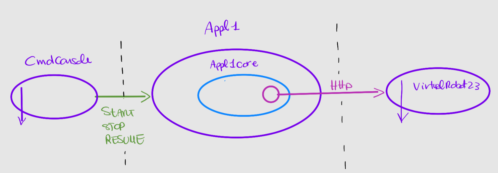
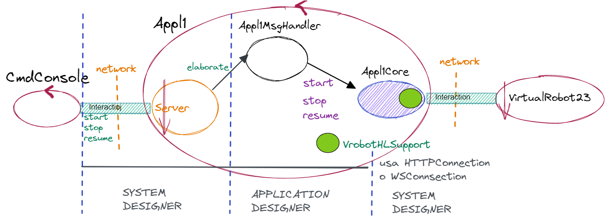

Introduction
Nello Sprint 2:
- Il robot doveva gestire i comandi stop/resume mentre percorreva il perimetro della stanza
- la logica applicativa riceveva comandi dalla CmdConsole
ARCHITETTURA LOGICA

Requirements
Requirement analysis
In particolare, detto P uno dei protocolli definiti in ProtocolType:
- L’applicazione Appl1 come un ente attivo (actor): capace di ricevere messaggi (comandi start/stop/resume) via P (protocol-indipendent)e interpretarlicome comandi a Appl1Core (e quindi a VirtualRobot23).
- CmdConsole deve diventare un actor che interagisce con un utente umano e che invia comandi ad Appl1 usando il protocollo P.
Problem analysis
Analisi delle porblematiche che sorgono dai requisiti forniti:
- La cmd deve diventare remota quindi dobbiamo introdurre un supporto alla comunicazione:
Noi abbiamo già un protocollo di comunicazione tra cmd e core dallo Sprint2,
ma non possiamo riutilizzarlo perché il requisiti specifica che il progetto sia protocol-indipendent: occorre quindi introdurre un nuovo supporto alla comunicazione
- Diretta conseguenza: interconnessione tra appl1 e vrobot protocol-indipendent.
- Pattern Adapter: avrò un wrapper che separa il core business dalla comunicazione sottostante.
- La console deve essere cofigurata da un configuratore o da un pattern factory tramite un file di configurazione; Console e Core dovranno essere configurati in modo concorde
Piano di Lavoro
Cosa dobbiamo fare:
-
Lato application core: Configuratore (legge il file di configurazione e fa il setup)
-
Refactoring console per integrazione della comunicazione con application core
-
Lato application core: implementare gli adapter per comunicazione con la console
Tempo Previsto:
Per lo sviluppo del componente appl1 è prevista una giornata di lavoro. Per il componente Command Console è prevista un giornata di lavoro
Test plans
Come pianifico il test (da leggere guida per test plans e test)
Project
Interazione APPL1-ROBOT:
- Refactoring di VrobotHLMovesHTTPApache:
La classe unibo.supports.VrobotHLMovesInteractionSynch che implementa IVrobotMoves
(usando la classe unibo.common.VrobotMsgs) è un Refactoring di VrobotHLMovesHTTPApache
che utilizza il supporto HttpConnection che implementa Interaction per HTTP
- La classe VrobotHLMovesInteractionSynch realizza le mosse di alto livelo del robot usando
l’implementazione di unibo.basicomm23.interfaces.Interaction che riceve nel costruttore.
HttpConnection è una di tali implementazioni.
- In prospettiva però, potremo anche sfruttare interazioni asincrone con il VirtualRobot usando
le WebSocket. Una classe (come ad esempio VrobotHLMovesInteractionAsynch) realizzerà le
mosse di alto livelo del robot usando il supporto WsConnection per le interazioni con WEnv.
- Necessario inserire una Factory con cui costruire l’opportuno oggetto di supporto
alla comunicazione con il robot che implementa l’intefaccia IVrobotMoves usando HTTP o WS.
unibo.supports.VrobotHLSupportFactory.
Appl1Core:
Per ottenere una nuova versione di Appl1Core che sfrutta i nuovi supporti basati su Interaction,
è sufficiente modificare la fase di configurazione del POJO applicativo.
La configurazione viene fissata leggendo informazioni da un file di nome Sprint3Config.json
Interazione CmdConsole-APPL1:
- CmdConsole è un actor che invia comandi ad Appl1
usando un protocollo P tra quelli definiti in ProtocolType: a seguito di un colloquio con il committente, si è convenuto di usare TCP.
- CmdConsole deve chiedere informazioni a Appl1 inivando richieste e visualizzando le risposte: il metodo elaborate di unibo.appl1.http.Appl1MsgHandler
deve gestire le richieste e inviare le risposte.
Appl1-HTTPSprint3: architettura finale:

Testing
Deployment
Maintenance